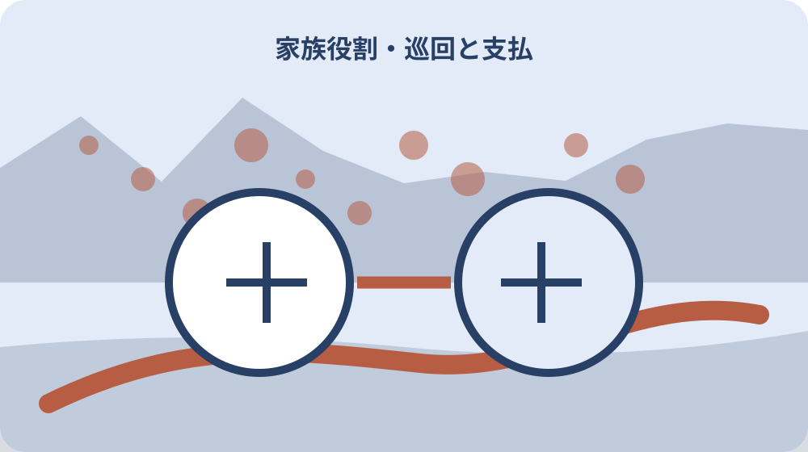
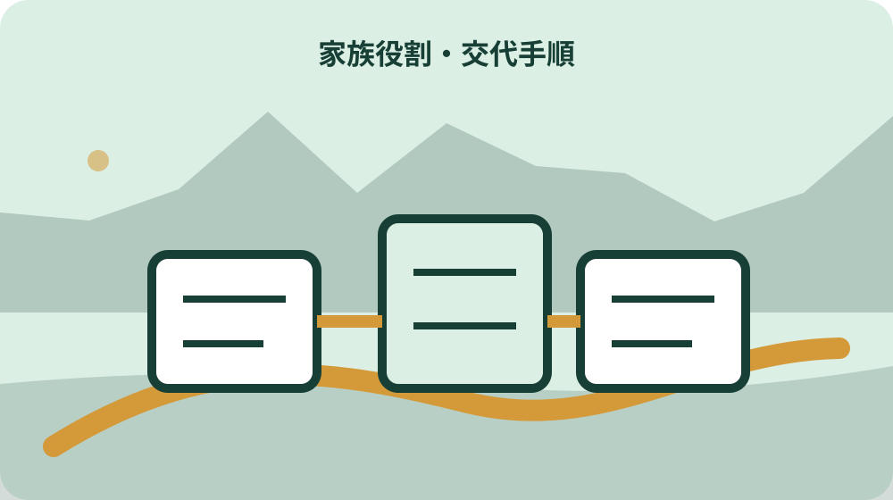

先に結論を確認する
この記事の答え：現地巡回、費用の支払、町・近隣・業者からの連絡受け、登記・税・修繕書類の保管を四列に分け、正担当と予備担当、交代条件を決めます。
森町で最初に照合する条件：巡回・支払・連絡・書類保管に正担当と予備担当を置く
空き家になる日から家族役割表を始める
森町の実家を空き家にする前に、巡回、支払、近隣連絡、書類保管を一人へまとめず、役割ごとに正担当と予備担当を決めます。所在地、空き家になる日、鍵の本数、緊急連絡先を表紙へ置き、家族が同じ物件を見ている状態から始めます。
この記事の答えは、現地へ行く人だけを管理者と呼ばず、現地巡回、電気・水道・保険等の支払、町や近隣からの連絡受け、登記・税・修繕資料の保管を四列に分けることです。担当できない期間と交代方法まで書けば、善意の手伝いを曖昧な責任へ変えずに済みます。
森町の空き家バンクは町が物件を管理する制度ではなく、所有者と利用希望者が交渉する仕組みです。登録や売却を考えていても、それまでの日常管理は家族側で止めない前提にします。
役割表には「売る人」「残す人」という結論を書きません。まだ方針が決まらない間も、郵便物、漏水、台風後、草木、鍵、近隣連絡を誰が確認するかだけは先に合意できます。
この段階の完了条件は全員が同じ決断をすることではありません。四担当と予備担当、連絡期限、保管場所が見え、次の一回を誰が行うか説明できる状態です。
役割表の第1欄「空き家になる日から家族役割表を始める」には、決定日、正担当、予備担当、次回日、未処理を記します。家族の一人が後から見ても、誰へ連絡し何を確認すればよいか、元の写真や請求書までたどれる形にします。
家族会議では「空き家になる日から家族役割表を始める」を五分だけ実際に読み上げ、担当者ができない時の代替を試します。できるつもりという回答ではなく、鍵・費用・連絡先・保管場所を開けたかで引継ぎ可能性を確かめます。
空き家になる日から家族役割表を始めるという作業名は表の索引にも使います。索引から元資料、担当者、確認日、次の期限へ一回で移れるかを確かめ、家族が別の物件や別の年度の記録を誤って開かないよう物件番号を併記します。
巡回担当の範囲を玄関から敷地まで描く
巡回担当は建物へ入る人とは限りません。道路から見える屋根、外壁、窓、郵便受け、門、庭木、側溝を外回り欄にし、室内へ入る場合は玄関、各室、天井、床、水回り、分電盤を別欄にします。
森町の確認票は雨漏り、白蟻、外壁、基礎、害獣、残置物などを分けています。家族の巡回票でも「異常あり」の一語にせず、部位、写真番号、発見日、前回との差を残します。
高所、床下、腐食した床、動物の痕跡など危険な場所は巡回担当の仕事に含めません。未確認と書き、専門業者へ渡す範囲を明確にします。
巡回日は固定日だけでなく、台風、大雨、長期不在、近隣からの連絡後という臨時条件も書きます。通常巡回と緊急確認を分けると、毎回すべてを点検する負担を抑えられます。
巡回後は写真を個人の端末だけに残さず、物件番号と撮影日で共有フォルダーへ移します。報告がなければ異常なしなのか未巡回なのか分からないため、実施済み欄も必ず更新します。
第2の作業場面では「巡回担当の範囲を玄関から敷地まで描く」を担当者の名前から書き始めず、物件で起きた事実、必要な期限、使う鍵や資料を先に並べます。その後で動ける人を割り当てると、交代時にも仕事の範囲が残ります。
引継ぎの確認は、予備担当が「巡回担当の範囲を玄関から敷地まで描く」の次の一手を実演する方法で行います。現地へ行けない場合も、写真の場所、請求の対象、連絡相手、原本保管者のどこまで確認できたかを返します。
巡回担当の範囲を玄関から敷地まで描くという作業名は表の索引にも使います。索引から元資料、担当者、確認日、次の期限へ一回で移れるかを確かめ、家族が別の物件や別の年度の記録を誤って開かないよう物件番号を併記します。
支払担当は契約名義と口座を混ぜない
支払列には固定資産税、火災保険、電気、水道、通信、警備、草刈り、修繕などを一行ずつ置きます。契約名義、請求先、引落口座、年額または月額、更新月、解約判断者を分けます。
支払担当が立替える場合は、費用の承認者、領収書の保管先、精算日を決めます。少額だからと口頭で積み上げると、相続人間の負担感が後から食い違います。
電気や水道を止めるか残すかは、巡回、換気、清掃、工事、凍結や漏水確認の方法と一緒に判断します。料金だけを理由に停止し、現地作業に必要な設備まで使えなくしないよう担当間で確認します。
火災保険等は空き家になった事実や利用状況を保険会社へ伝え、補償条件を確認します。家族役割表は保険の有効性を保証するものではなく、照会日と回答を残す入口です。
支払欄の完了は「払った」だけではありません。対象期間、金額、名義、証憑、次回期限がそろい、交代した家族が同じ請求を二重に払わない状態にします。
役割表の第3欄「支払担当は契約名義と口座を混ぜない」には、決定日、正担当、予備担当、次回日、未処理を記します。家族の一人が後から見ても、誰へ連絡し何を確認すればよいか、元の写真や請求書までたどれる形にします。
家族会議では「支払担当は契約名義と口座を混ぜない」を五分だけ実際に読み上げ、担当者ができない時の代替を試します。できるつもりという回答ではなく、鍵・費用・連絡先・保管場所を開けたかで引継ぎ可能性を確かめます。
支払担当は契約名義と口座を混ぜないという作業名は表の索引にも使います。索引から元資料、担当者、確認日、次の期限へ一回で移れるかを確かめ、家族が別の物件や別の年度の記録を誤って開かないよう物件番号を併記します。
連絡担当を町・近隣・業者で分ける
連絡担当は電話を受ける一人ではなく、町、自治会や近隣、保険会社、修繕業者、仲介先など相手別に決めます。誰からの連絡を誰へ転送するかを矢印で表します。
近隣へ共有するのは所有者側の連絡窓口、緊急時の連絡方法、次回確認予定など必要範囲です。家族関係、相続内容、売却希望額など不要な個人情報は広げません。
町へ相談した場合は担当部署、日時、相談した状態、案内された次の確認先を記録します。相談したことと、町が管理や修繕を引き受けたことを混同しません。
業者へ連絡する際は写真番号、部位、希望する調査範囲、立会者、鍵の受渡しを伝えます。「全体を見て」だけでは見積り範囲と家族の期待がずれます。
連絡担当が不在のときは予備担当がどの情報まで返答できるかを決めます。判断できない内容は持ち帰り、回答期限を相手へ伝える運用にします。
第4の作業場面では「連絡担当を町・近隣・業者で分ける」を担当者の名前から書き始めず、物件で起きた事実、必要な期限、使う鍵や資料を先に並べます。その後で動ける人を割り当てると、交代時にも仕事の範囲が残ります。
引継ぎの確認は、予備担当が「連絡担当を町・近隣・業者で分ける」の次の一手を実演する方法で行います。現地へ行けない場合も、写真の場所、請求の対象、連絡相手、原本保管者のどこまで確認できたかを返します。
連絡担当を町・近隣・業者で分けるという作業名は表の索引にも使います。索引から元資料、担当者、確認日、次の期限へ一回で移れるかを確かめ、家族が別の物件や別の年度の記録を誤って開かないよう物件番号を併記します。

書類担当は原本・写し・閲覧先を分ける
書類列には登記事項、固定資産税通知、課税明細、保険証券、契約書、図面、境界資料、修繕履歴、写真を置きます。原本保管者、電子写し、閲覧できる家族を分けます。
重要書類を現地の一箱だけへ集めると、漏水、火災、盗難時に同時に失うおそれがあります。原本は安全な場所へ、現地には作業に必要な写しだけを置く方法を検討します。
個人番号や口座情報を含む書類は、共有フォルダーへ無差別に入れません。閲覧者、保存期間、削除方法を決め、業者へ渡す資料は必要箇所だけにします。
鍵番号、暗証番号、本人確認書類の画像は通常の巡回写真と分離します。利便性のための共有が、第三者の立入りにつながらないよう権限を絞ります。
書類担当の役割は内容を法律的に判断することではありません。不足資料と確認先を一覧にし、税、登記、境界等は各専門窓口へ質問できる形に整えます。
役割表の第5欄「書類担当は原本・写し・閲覧先を分ける」には、決定日、正担当、予備担当、次回日、未処理を記します。家族の一人が後から見ても、誰へ連絡し何を確認すればよいか、元の写真や請求書までたどれる形にします。
家族会議では「書類担当は原本・写し・閲覧先を分ける」を五分だけ実際に読み上げ、担当者ができない時の代替を試します。できるつもりという回答ではなく、鍵・費用・連絡先・保管場所を開けたかで引継ぎ可能性を確かめます。
書類担当は原本・写し・閲覧先を分けるという作業名は表の索引にも使います。索引から元資料、担当者、確認日、次の期限へ一回で移れるかを確かめ、家族が別の物件や別の年度の記録を誤って開かないよう物件番号を併記します。
鍵の保管と現地立入りを記録する
鍵は玄関、勝手口、門、倉庫、車庫、郵便受けごとに番号を付けます。誰が何本持ち、いつ借り、いつ返したかを役割表から参照できる鍵台帳へ残します。
合鍵を近隣へ預ける場合は、家族の合意、使ってよい条件、返却方法を明確にします。親切への期待だけで緊急立入り責任を負わせません。
業者へ鍵を渡すときは工事名、対象場所、期間、返却日、複製禁止を確認します。鍵を郵便受けや屋外の見つけやすい場所へ置く方法は避けます。
現地へ入った人は入室・退出時刻、同行者、作業範囲、施錠確認を記録します。写真があるだけでは最後に戸締まりした人が分かりません。
鍵を紛失した場合の連絡順、錠交換判断、保険や警備への連絡も予備欄へ置きます。平常時の管理表が緊急時の初動表になります。
第6の作業場面では「鍵の保管と現地立入りを記録する」を担当者の名前から書き始めず、物件で起きた事実、必要な期限、使う鍵や資料を先に並べます。その後で動ける人を割り当てると、交代時にも仕事の範囲が残ります。
引継ぎの確認は、予備担当が「鍵の保管と現地立入りを記録する」の次の一手を実演する方法で行います。現地へ行けない場合も、写真の場所、請求の対象、連絡相手、原本保管者のどこまで確認できたかを返します。
鍵の保管と現地立入りを記録するという作業名は表の索引にも使います。索引から元資料、担当者、確認日、次の期限へ一回で移れるかを確かめ、家族が別の物件や別の年度の記録を誤って開かないよう物件番号を併記します。
通常巡回と災害後確認を別工程にする
月ごとの通常巡回は劣化の変化を追う工程です。台風、大雨、地震、近隣からの異常連絡後は、安全確認を優先する別工程にし、無理に同じ担当が入らないようにします。
災害後は道路、擁壁、屋根材、電線、倒木、浸水、ガラスなど外から確認できる危険を先に見ます。立入危険があれば写真を撮るために近づきません。
巡回担当が現地へ行けない場合、代行を頼む相手と費用承認者を決めます。予備担当がいなければ、家族全員が誰か行ったと思い込む空白が生まれます。
平常の写真と災害後の写真は同じ撮影位置を使うと変化を比較しやすくなります。撮影位置図を役割表へ付け、担当交代後も比較条件をそろえます。
異常発見後は応急対応、専門調査、見積り、施工、再確認を別行にします。巡回担当が修繕内容まで単独で決める仕組みにしません。
役割表の第7欄「通常巡回と災害後確認を別工程にする」には、決定日、正担当、予備担当、次回日、未処理を記します。家族の一人が後から見ても、誰へ連絡し何を確認すればよいか、元の写真や請求書までたどれる形にします。
家族会議では「通常巡回と災害後確認を別工程にする」を五分だけ実際に読み上げ、担当者ができない時の代替を試します。できるつもりという回答ではなく、鍵・費用・連絡先・保管場所を開けたかで引継ぎ可能性を確かめます。
通常巡回と災害後確認を別工程にするという作業名は表の索引にも使います。索引から元資料、担当者、確認日、次の期限へ一回で移れるかを確かめ、家族が別の物件や別の年度の記録を誤って開かないよう物件番号を併記します。
森町の空き家資料を役割表へつなぐ
森町の空き家・空き地バンクでは、町は物件の情報提供を行いますが、交渉や契約へ直接関与せず、物件管理も所有者側の課題として残ります。役割表は登録前後を通じた管理の空白を防ぎます。
森町の第2期空家等対策計画ページは、町内の空き家対応を進める基礎資料への入口です。個別住宅の修繕方法を決める資料ではないため、相談内容と現地事実を分けて使います。
森町のバンク確認票は建物内外の状態を細かく分けています。家族の巡回担当が同じ分類を使うと、将来の相談や登録時に過去写真を探しやすくなります。
公式資料の項目へ該当したからといって、行政上の認定や売却可否を家族だけで決めません。確認項目を共通語として用い、個別判断は担当窓口や専門家へ確認します。
町資料の更新日と家族票の更新日を別に残します。制度や様式が変わっても古い家族票を公式の現行様式と思い込まないためです。
第8の作業場面では「森町の空き家資料を役割表へつなぐ」を担当者の名前から書き始めず、物件で起きた事実、必要な期限、使う鍵や資料を先に並べます。その後で動ける人を割り当てると、交代時にも仕事の範囲が残ります。
引継ぎの確認は、予備担当が「森町の空き家資料を役割表へつなぐ」の次の一手を実演する方法で行います。現地へ行けない場合も、写真の場所、請求の対象、連絡相手、原本保管者のどこまで確認できたかを返します。
森町の空き家資料を役割表へつなぐという作業名は表の索引にも使います。索引から元資料、担当者、確認日、次の期限へ一回で移れるかを確かめ、家族が別の物件や別の年度の記録を誤って開かないよう物件番号を併記します。
交代条件と不在期間を先に決める
担当者が病気、出張、介護、繁忙で動けない時期を役割表へ書けるようにします。できないことを責める表ではなく、予備担当へ早く渡すための情報です。
交代は「頼んだ」で終えず、鍵、未処理の請求、次回巡回、連絡中の相手、保管書類を五点確認します。引継ぎ日と受取確認を残します。
長期不在が分かった時点で予定を前倒しするか、代行費用を承認するかを決めます。当日に家族チャットで人を探す運用を常態化させません。
家族の住所や電話番号が変わったら、近隣・町・業者へ伝える必要範囲を見直します。古い連絡先を残したまま役割名だけ変えないようにします。
年一回は担当を固定し続ける理由も確認します。負担が偏っているなら、現地へ行けない家族が支払や書類を受け持つなど役割交換を検討します。
役割表の第9欄「交代条件と不在期間を先に決める」には、決定日、正担当、予備担当、次回日、未処理を記します。家族の一人が後から見ても、誰へ連絡し何を確認すればよいか、元の写真や請求書までたどれる形にします。
家族会議では「交代条件と不在期間を先に決める」を五分だけ実際に読み上げ、担当者ができない時の代替を試します。できるつもりという回答ではなく、鍵・費用・連絡先・保管場所を開けたかで引継ぎ可能性を確かめます。
交代条件と不在期間を先に決めるという作業名は表の索引にも使います。索引から元資料、担当者、確認日、次の期限へ一回で移れるかを確かめ、家族が別の物件や別の年度の記録を誤って開かないよう物件番号を併記します。

費用と判断権を同じ人へ集中させない
現地担当が異常を見つけ、見積りを取り、契約し、支払うまでを一人で担うと、急ぎの判断と家族合意が混ざります。発見、調査依頼、費用承認、支払を分けます。
少額修繕の即決上限、複数見積りが必要な金額、緊急時の例外を家族で決めます。金額基準は森町の指定ではなく、各家族の実務ルールです。
承認しない家族は理由と追加で必要な情報を返します。「聞いていない」「高い」だけで止めず、写真、原因、範囲、代替案を確認します。
売却や賃貸の判断権、相続持分、日常管理の担当権限は同じとは限りません。役割表だけで共有者の法的同意を代替しないよう、重要判断は別の合意記録へ渡します。
費用欄には見積額、承認額、実額、支払者、精算状況を並べます。後から固定資産税や修繕費の負担を話す際に、記憶だけに頼らない資料になります。
第10の作業場面では「費用と判断権を同じ人へ集中させない」を担当者の名前から書き始めず、物件で起きた事実、必要な期限、使う鍵や資料を先に並べます。その後で動ける人を割り当てると、交代時にも仕事の範囲が残ります。
引継ぎの確認は、予備担当が「費用と判断権を同じ人へ集中させない」の次の一手を実演する方法で行います。現地へ行けない場合も、写真の場所、請求の対象、連絡相手、原本保管者のどこまで確認できたかを返します。
費用と判断権を同じ人へ集中させないという作業名は表の索引にも使います。索引から元資料、担当者、確認日、次の期限へ一回で移れるかを確かめ、家族が別の物件や別の年度の記録を誤って開かないよう物件番号を併記します。
大石の視点：まだ売らなくても管理を止めない
ここまでの森町のバンク運用、空き家計画、確認票の項目は公的資料で確認できる事実です。個別の契約、保険、修繕、家族の権限は各窓口と専門家へ確認します。
私、大石浩之は、売却方針より先に四担当を決めることを勧めます。これは森町の指定様式ではなく、結論が出ない期間にも建物と近隣への対応を止めないための実務提案です。
現地へ通える家族だけに負担を寄せると、他の家族は状態と費用を理解しにくくなります。巡回写真、支払証憑、連絡記録、重要書類を別担当で共有すると、話合いの材料がそろいます。
役割を決めても、相続や共有の権限が確定するわけではありません。誰が動けるかと、誰の同意が必要かを別欄にすることが重要です。
一枚の表で目指すのは管理の完璧さではありません。担当不在、未確認、未承認を早く見つけ、必要な窓口へ渡せる状態です。
一回の引継ぎを試して表を閉じる
完成前に一度、予備担当が表だけを見て次回巡回日、未払い、連絡中の案件、鍵、書類を説明できるか試します。説明できない欄は担当者の頭の中に情報が残っています。
試行では実際に鍵を受け渡し、共有フォルダーを開き、最新写真と領収書へ到達します。リンク切れや権限不足は平常時に直します。
担当者名だけでなく更新日を各欄へ付けます。古い担当を見て連絡し続ける事故を防ぎ、家族会議で変えた内容を反映します。